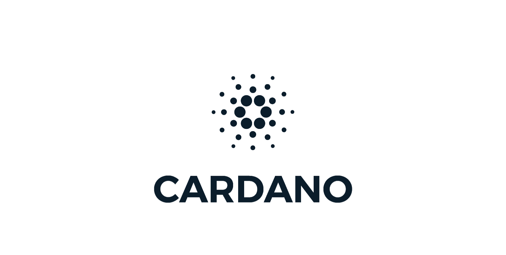
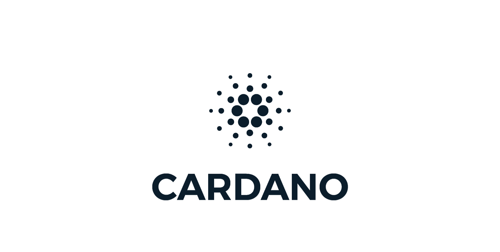
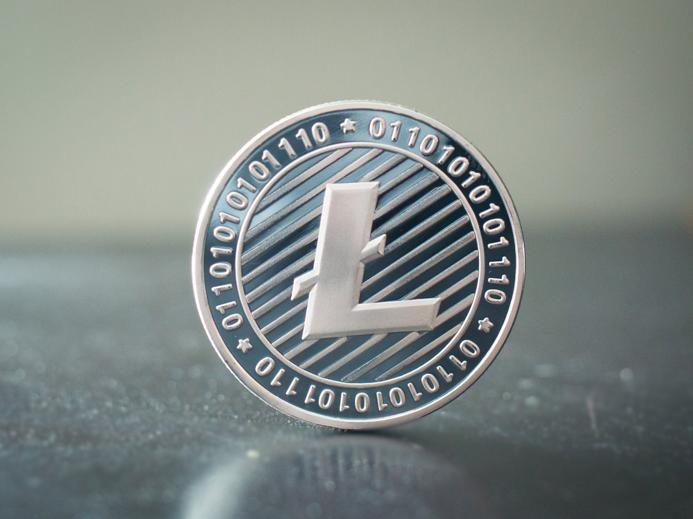

crypto
Ethereum is moving to a consensus mechanism called proof-of-stake (PoS) from proof-of-work (PoW). This was always the plan as it's a key part in the community's strategy to scale Ethereum via the Eth2 upgrades. However getting PoS right is a big technical challenge and not as straightforward as using PoW to reach consensus across the network
crypto
Best crypto website just for tranding news

crypto
Avalanche, according to its developer documentation, is an open-source platform for “launching decentralized applications and enterprise blockchain deployments in one interoperable, highly scalable ecosystem.
TRADING
Performing hard fork on a Blockchain network offers several benefits to end-users. We are going to apply the same at TSF Node to increase: • The block gas limit & block size from 4.7 to 12.5 million. • Up to 600 transactions per block. Get ready to avail of maximum benefits with the updated TSF client which will be available for download by December 1, 2021 on Github download section. Stay connected for the latest updates!
 

crypto
Cardano NFT marketplace Verlux releases the first UI demo of their platform.
Verlux.io, a Cardano-based NFT Marketplace, has begun its seed sale to early adopters on Cardano, which will run until the 9th of December, and as at the time of writing this, almost 50% of the allotted 250 Million $VLX tokens have been sold.
crypto
Best crypto website just for tranding news
Looking into the possibility of Litecoin making big gains, thanks to a growing network. Over the course of the last ten years, many altcoins came and went, while some struggled to carry forward.
Litecoin, however, has managed to remain relevant in the market despite the occasional speed breakers and rangebound price action.
